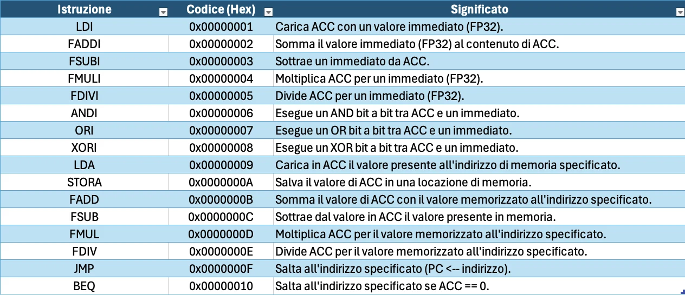
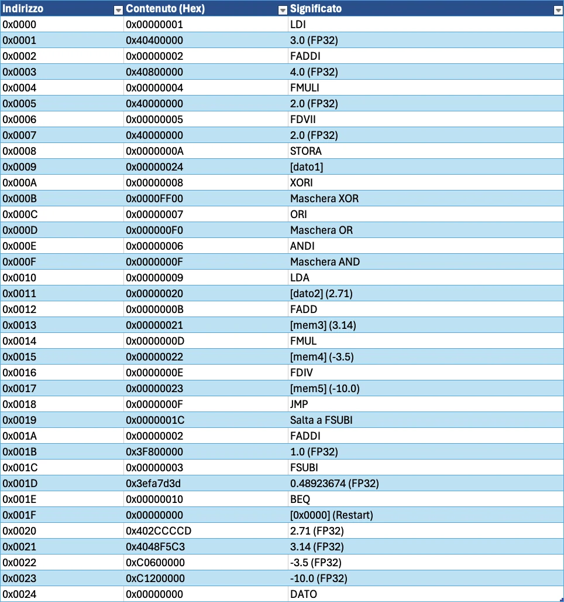
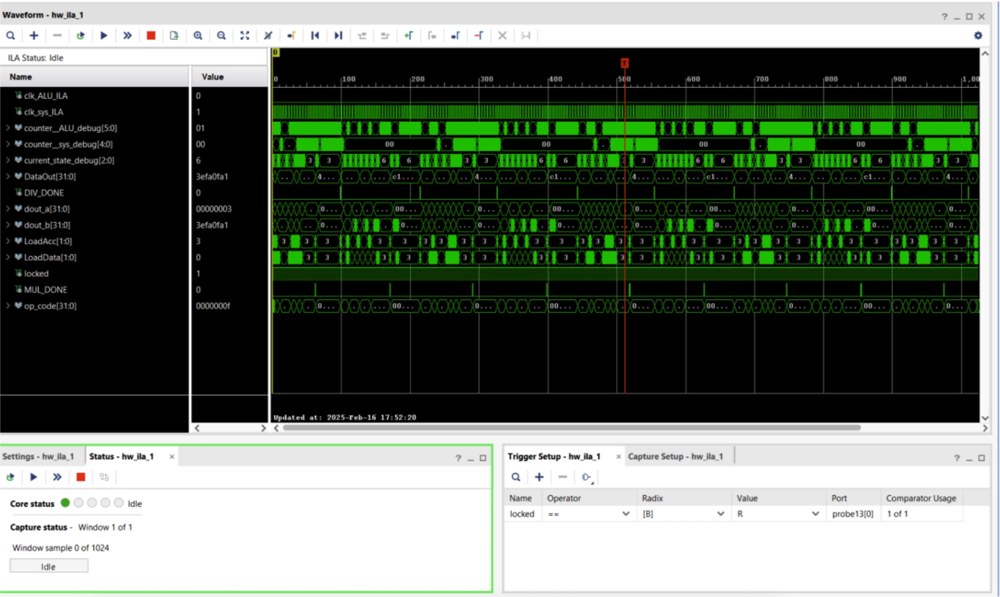

A processor built from ISA to programmable silicon.
A custom 32-bit microprocessor with an FP32 floating-point ALU, SystemVerilog architecture and verification, and on-board FPGA debugging.
Designing the whole system
The architecture combines a custom ISA, a 32-bit datapath, instruction register, dual-port fetch RAM, control FSM and floating-point ALU. Each block was developed in SystemVerilog and integrated into an executable system.

Instructions and FP32 operations
The arithmetic unit includes floating-point add/subtract, an iterative Booth multiplier and CORDIC divider. The 16-instruction ISA defines the contract between programs and datapath. The complete instruction table and test program are displayed separately at a readable width.


From simulation to board
SystemVerilog testbenches, functional simulation and FPGA tests exercised the fetch, control and datapath. ILA captures let me compare real execution against expected results and diagnose timing issues.
